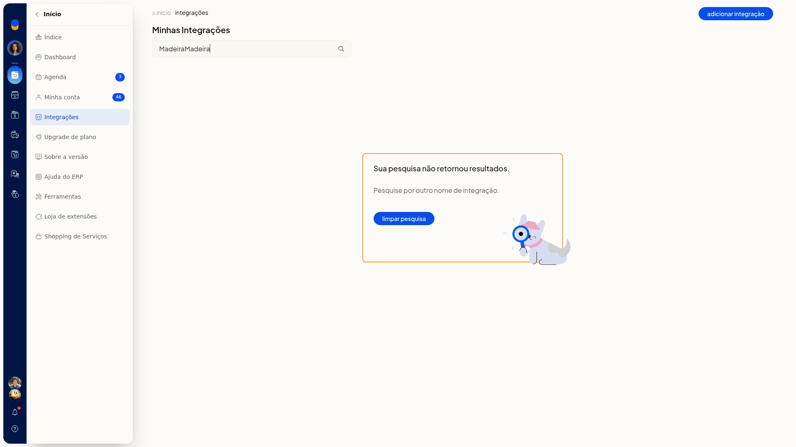
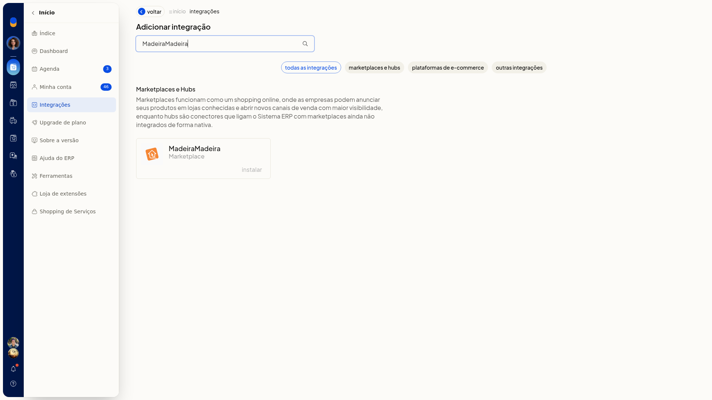
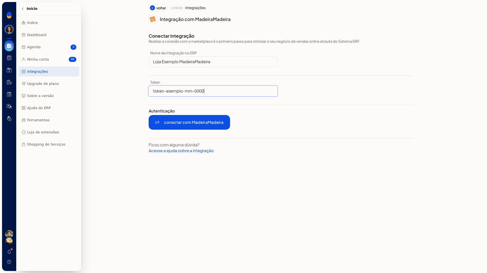

Integração com a MadeiraMadeira
Pré-requisitos
- Tenha em mãos o token que a tela de conexão solicita.
- Se a opção não aparecer para você, peça acesso ao administrador da conta.
Importante
- Nome da integração no ERP não aceita valor vazio ou só com espaços. Nesse caso, a mensagem é O nome da integração é obrigatório.
Instruções
-
Acesse Início > Integrações.
-
Clique em Adicionar integração.

-
Em Marketplaces e Hubs, localize o card MadeiraMadeira e clique em instalar. A busca do catálogo também filtra esse card.

-
Na tela Conectar Integração, na seção Autenticação, confira ou altere Nome da integração no ERP. O campo vem preenchido com MadeiraMadeira.
-
Informe o Token. O link Acesse a ajuda sobre a integração abre a ajuda da integração em uma nova aba.

-
Clique em conectar com MadeiraMadeira. A gravação da conexão ocorre nesse botão.
Informações adicionais
O que fazer depois de configurar
Depois de a integração estar configurada, informe à equipe da MadeiraMadeira as URLs apresentadas e cadastre as formas de envio na aba Cotação de frete, em Mapeamentos.
Para onde voltar leva
Voltar na tela Conectar Integração retorna para Minhas Integrações.